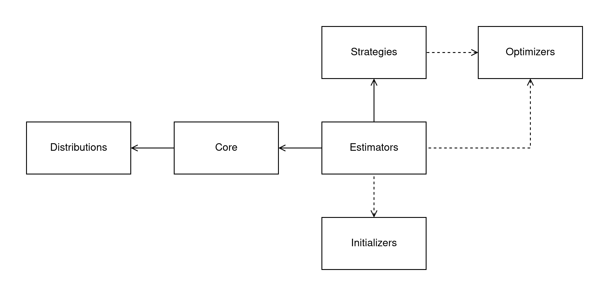

Модули архитектуры pysatl-mpest#
На следующей диаграмме представлена высокоуровневая диаграмма архитектуры pysatl-mpest:
{kind=link}

Ядро (Core): Центральный модуль, который содержит основные классы для построения смеси и распределения. Ключевые компоненты:
MixtureModel — класс, представляющий саму модель смеси, который управляет компонентами и их весами.
Parameter — дескриптор для удобного определения и валидации параметров в классах распределений.
Распределения (Distributions): Модуль содержит конкретные реализации непрерывных вероятностных распределений (например, нормальное, экспоненциальное и т.д.), которые могут быть компонентами смеси. Каждый класс в этом модуле наследуется от
ContinuousDistributionи реализует его методы.Оценщики (Estimators): Модуль, содержащий алгоритмы для оценки параметров смешанной модели. Это основной интерфейс для пользователя. Оценщики делятся на два типа:
Итеративные (Iterative): Реализуют пошаговые алгоритмы, такие как EM. Ключевым классом здесь является
Pipeline, который позволяет гибко конструировать процесс оценки из отдельных шагов (PipelineStep), критериев останова (Breakpointer) и стратегий удаления компонент (Pruner).Прямые (Direct): Реализуют неитеративные методы оценки, например, основанные на методе моментов для всей смеси сразу.
Стратегии (Strategies): Определяют конкретную логику вычисления параметров для отдельной компоненты в рамках одного шага итеративного алгоритма (например, М-шага). Благодаря использованию механизма
@singledispatch, для каждой компоненты можно задать свою, наиболее эффективную аналитическую или численную стратегию оценки (например, через Q-функцию или метод моментов), что делает систему легко расширяемой.Оптимизаторы (Optimizers): Предоставляют общие численные методы оптимизации. Они используются стратегиями в тех случаях, когда для оценки параметров компоненты нет аналитического решения. Также могут использоваться напрямую некоторыми оценщиками (например, в MLE для прямой максимизации правдоподобия всей смеси).
Инициализаторы (Initializers): Вспомогательный модуль, который отвечает за начальную инициализацию параметров смеси перед запуском основного алгоритма оценки. Качественная инициализация может значительно ускорить сходимость и улучшить итоговый результат.
Выбор числа компонент (Component Number): Модуль, предоставляющий инструменты для одной из самых важных задач в моделировании смесей — определения оптимального количества компонент.